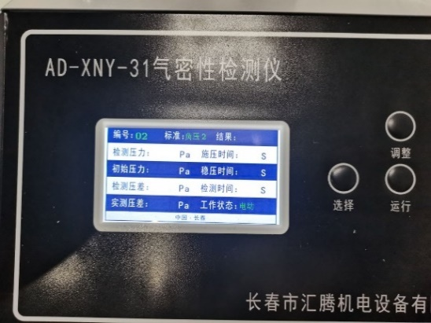
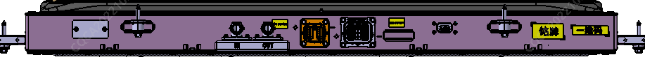
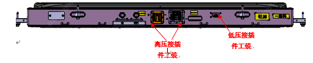
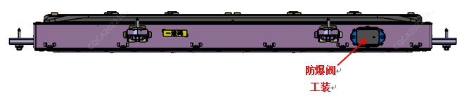

(1) Проверка герметичности каналов охлаждения ① Перед выполнением работ: I. Подготовить приспособления для проверки герметичности (приспособление для проверки герметичности разъема водяного охлаждения, заглушка для разъема водяного охлаждения); II. Подключить оборудование к Питание, включить оборудование; III. Как показано на рисунке 4.5.1, установить параметры проверки герметичности: испытательное давление 0.2MPa ± 0.01MPa; после достижения заданного давления время стабилизации - 60s, время проверки перепада давления - 10s, требуемое значение утечки ≤ 5ml/min.

② Во время работы: I. Поочередно подключить заглушки и приспособления для проверки герметичности в соответствующие места аккумуляторной батареи:

II. Подключить испытательный воздушный шланг оборудования к приспособлению для проверки герметичности; III. Нажать кнопку запуска оборудования, начать проверку, после получения результатов от оборудования переходить к следующему этапу; ③ После работы: I. Отсоединить испытательный воздушный шланг, свернуть его и положить в ящик для хранения; II. Поочередно снять заглушки (в порядке, обратном подключению) и положить их в ящик для хранения. (2) Проверка герметичности всего блока ① Перед выполнением работ: I. Подготовить заглушки для проверки герметичности (заглушка для высоковольтных разъемов, заглушка для низковольтных разъемов, заглушка для взрывозащищенного клапана и т. д.); II. Подключить оборудование к Питание, включить оборудование; III. Как показано на рисунке 4.5.1, установить параметры проверки герметичности: испытательное давление -7KPa; после достижения заданного давления время стабилизации - 60s, время проверки перепада давления - 60s, требуемое значение утечки ≤ 170Pa. ② Во время работы: I. Поочередно подключить заглушки в соответствующие места аккумуляторной батареи, как показано на Рисунке 4.5.3:


II. Подключить испытательный воздушный шланг оборудования к заглушке; III. Нажать кнопку запуска оборудования, начать проверку, после получения результатов от оборудования переходить к следующему этапу; Меры предосторожности: во время проверки не прикасаться к кнопкам оборудования, штуцерам воздушных шлангов и заглушкам. При обнаружении утечек в случае отрицательного результата проверки герметичности необходимо заглушить взрывозащищенный клапан заглушкой, а затем подать давление во весь блок; когда будет замечена легкая Деформация в виде выпуклости на верхней крышке, прекратить подачу давления, нанести мыльный раствор на стык верхней крышки и корпуса, посадочные поверхности разъемов, сварные швы корпуса и Другое области, наблюдать за появлением пузырьков или увеличением их размера. ③ После работы: I. Отсоединить испытательный воздушный шланг, свернуть его и положить в ящик для хранения; II. Поочередно снять заглушки (в порядке, обратном подключению) и положить их в ящик для хранения.